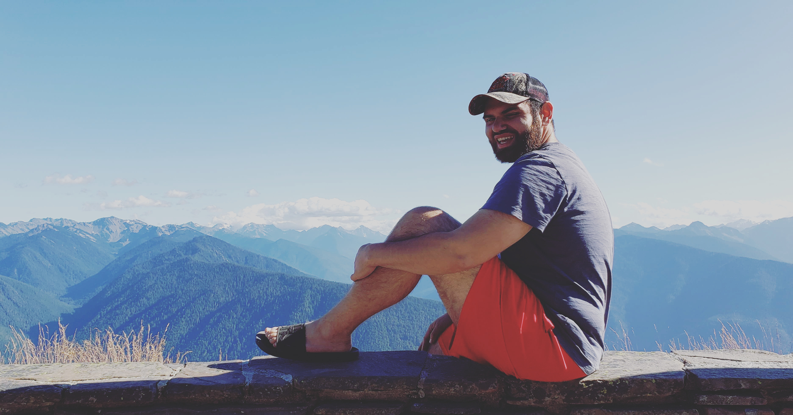

Hey there, thanks for stopping by!
My name is Kevan Meratinia. I presently reside in the Mountlake Terrace/Lynnwood area. I am passionate about health and wellness and enjoy spending time with friends and family. I grew up in Seattle and graduated from Ballard High School in 2009. For my final project, I built a website for my grandma about her Indian Tlinket Basket collection. This was my first spark of interest in web development.
I am currently enrolled at Edmonds Community College. I am in their Associate in Technical Arts Degree - Web Application and Cloud Developer. The courses I took this quarter were: CIS 242 (Web II JavaScript and jQuery), CIS 244 (Web IV Joomla! and SEO), and CIS 245 (Intro to CSS). In the previous quarter I took CIS 241 (Web Development I), where I learned the basics of web development and some of the history. I enjoy web development because to me, it's like finding pieces to a puzzle. I like to think of myself as a natural problem solver, and I enjoy finding solutions via trial and error.
Some of my interests include Nutrition, Exercise, and anything Outdoors. A good day to me is when I am outside in nature, breathing fresh air and enjoying the beautiful scenery. I welcome you to check out my interests page where I will discuss these further. Again, thank you for taking the time to check out my web site!